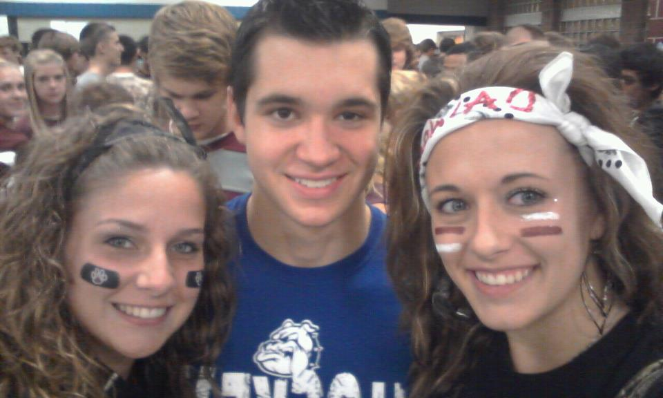

My life in 2011.

dear future self,My life is great right now, your best friends are Katlyn, Emma, Stephanie, Paige, Mikie, Liz, Sarah, Autumn, and Michael. Michael has been your boyfriend for almost 2 years now and its going great. as of right now i really hope things work out between you two. you work at Family Fare pushin carts and bagging grocery's( i HATE it) but it gives you money so your suckin it up. 10 years from now i hope to be happy, have a good job, and maybe even be married:)